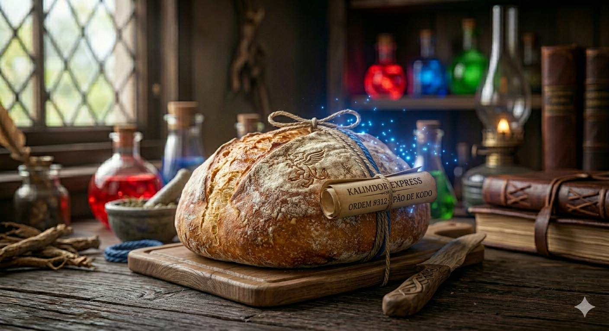
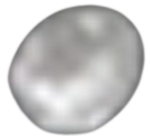
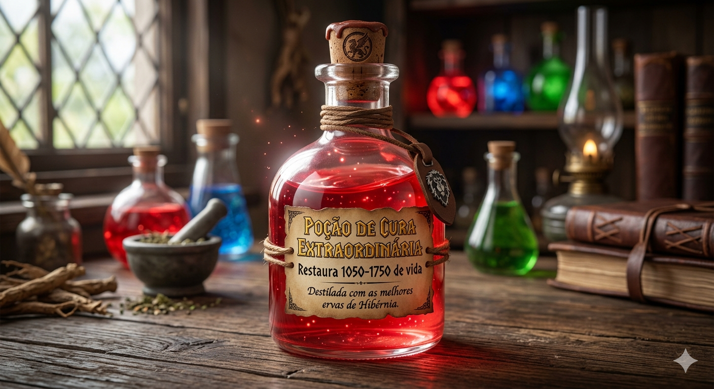
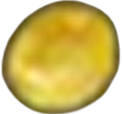
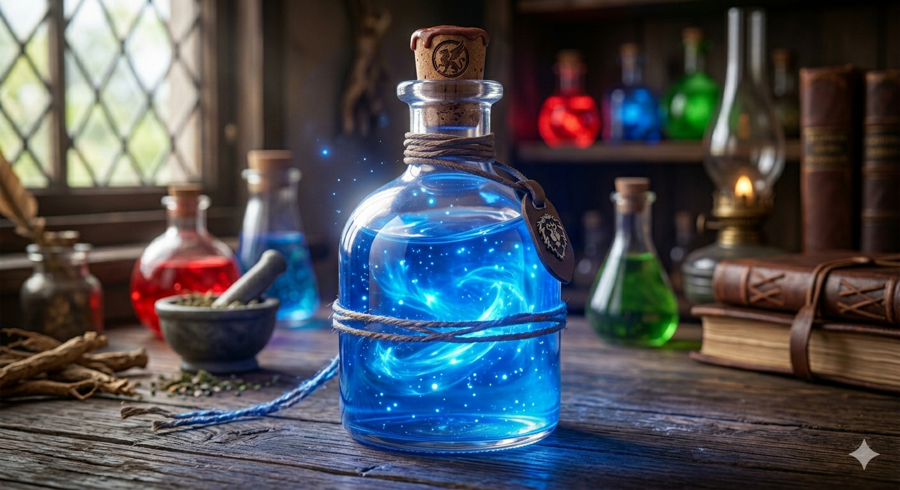
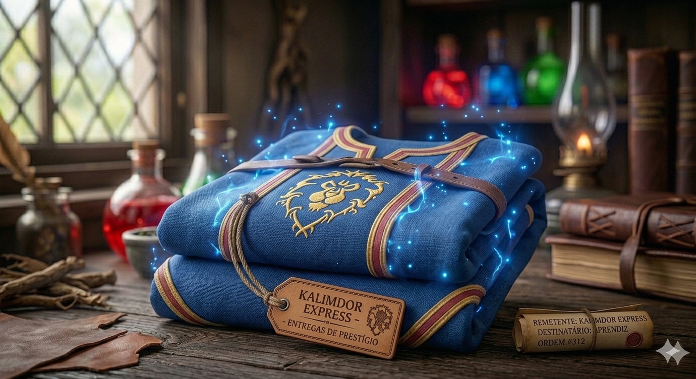
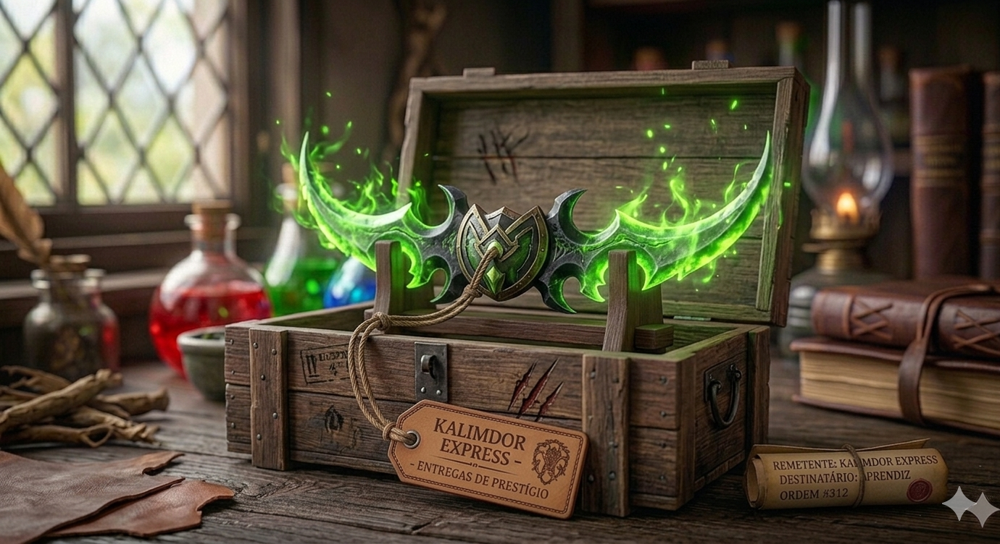

Artefatos Disponíveis
Itens dos campos de batalha e tavernas de Azeroth.
Pão de Centeio Macio

Uso: Recupera 5% da sua vida a cada segundo por 20 segundos.
"Sempre fresquinho, feito com amor em Goldshire."
25

Poção de Cura Extraordinária

Uso: Restaura 1050 a 1750 de vida.
"Destilada com as melhores ervas de Hibérnia. Não saia de uma masmorra sem ela!"
2

50Poção de Mana Extraordinária

Uso: Restaura 1350 a 2250 de mana.
"Energia arcana líquida. Recomendada por 9 entre 10 Magos de Dalaran."
3
Quel'Delar, Poder dos Fiéis

Uso: Espada de Duas Mãos. Chance ao atingir: aumenta seu Poder de Ataque em 250 por 10 segundos.
"Um artefato lendário forjado no Sol de Quel'Thalas e restaurado em águas sagradas."
50.000
Túnica do Aprendiz

Uso: Peito (Tecido). Armadura: 4.
"Confortável, leve e com cheiro de aventura nova. Ideal para seus primeiros feitiços."
10
Lâminas de Illidan

Uso: Arma de mão principal e secundária (Adagas). Dano físico elevado com bônus de crítico.
"Forjadas nas sombras de Terralém e banhadas em energia demoníaca. Dizem que sussurram para quem as empunha."
13500